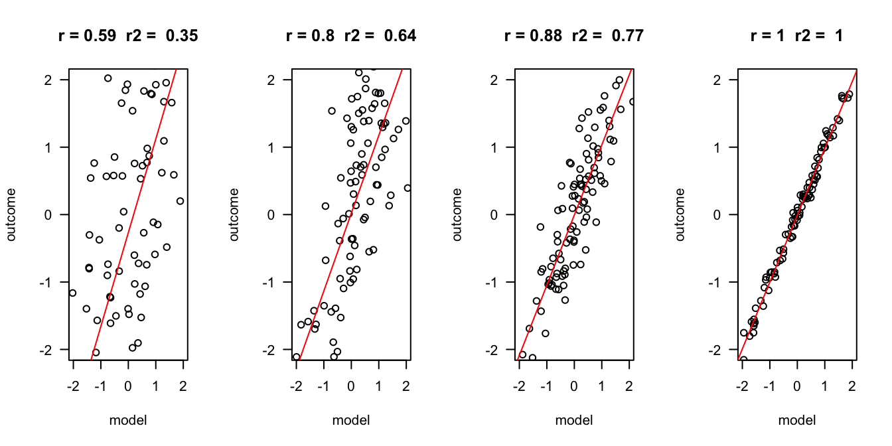
ANOVA as regression
ANOVA as regression
ANOVA
ANalysis Of VAriance
ANOVA’s decompose the variance components and look at the ratio of explained to unexplained variance.
Assuming \(H_0\) is true, we would expect an equal amount of explained and unexplained variance.
Analysing variance components
Decomposing variance example of height for males and females.
Model
\(\LARGE{\text{Outcome} = \text{Model} + \text{Error}}\)
Regression model
In statistics, linear regression is a linear approach for modeling the relationship between a scalar dependent variable y and one or more explanatory variables denoted as X.
\[Y_i = \beta_0 + \beta_1 X_{1i} + \beta_2 X_{2i} + \dotso + \beta_n X_{ni} + \epsilon_i\]
In linear regression, the relationships are modeled using linear predictor functions whose unknown model parameters \(\beta\)’s are estimated from the data (\(b\)).
Outcome vs Model
The better the model, the more it is the same as the outcome variable. Hence, they have a high correlation \(r\), and the explained variance \(R^2\) is also high.
Formal model
\[ \begin{align} \text{model} &= \beta_0 + \beta_1 X_{1i} \\ \\ Y_i &= \beta_0 + \beta_1 X_{1i} + \epsilon_i \\ \hat{Y}_i &= \beta_0 + \beta_1 X_{1i} \\ \\ \epsilon_i &= Y_i - \hat{Y}_i \end{align} \]
- \(_i\) is the index number for the data. A row in your data.
- \(\beta\) is the true population parameter
- \(X\) is your predictor variable
- \(\epsilon\) is the error. How much is the model off.
- The \(\hat{\phantom{Y}}\) refers to the expected outcome. So, it is the result of the model.
ANOVA as regression
To run an ANOVA as a regression model we need to create dummy variables for each categorical variable that we use. We need \(k - 1\) dummy variables, where \(k\) is the amount of categories.
So, for the categorical variable biological sex, we need 1 dummy.
Dummy variable
Creating a dummy variable means making a new variable in SPSS to turn on that category, and turn all other categories off.
In our case, biological sex has two categories, so we need one dummy. Let’s call our dummy female.
\[ \begin{align} \widehat{outcome}_i &= b_0 + b_1 \text{dummy}_i \\ \widehat{height}_i &= b_0 + b_1 \text{male}_i \end{align} \]
- \(\text{dummy} = \{0, 1\}\), on or off
- \(\text{male} = \{0,1\}\), on or off
Example
Regression analysis
| height | |||
| Predictors | Estimates | CI | p |
| (Intercept) | 161.48 | 159.90 – 163.05 | <0.001 |
| sex [male] | 15.42 | 13.21 – 17.63 | <0.001 |
| Observations | 132 | ||
| R2 / R2 adjusted | 0.595 / 0.591 | ||
- \(b_0 = 161.48\), \(\bar{x}_\text{females} = 161.48\)
- \(b_1 = 15.42\), \(\bar{x}_\text{males} = b_0 + b_1 = 176.9\)
Regression model
\[ \begin{align} \widehat{\text{height}}_i &= b_0 + b_1 \times \text{dummy}_i \\ \widehat{\text{height}}_i &= 161.48 + 15.42 \times \text{dummy}_i \end{align} \]
r
The correlation between height and expected height as indication of how wel our model fits.
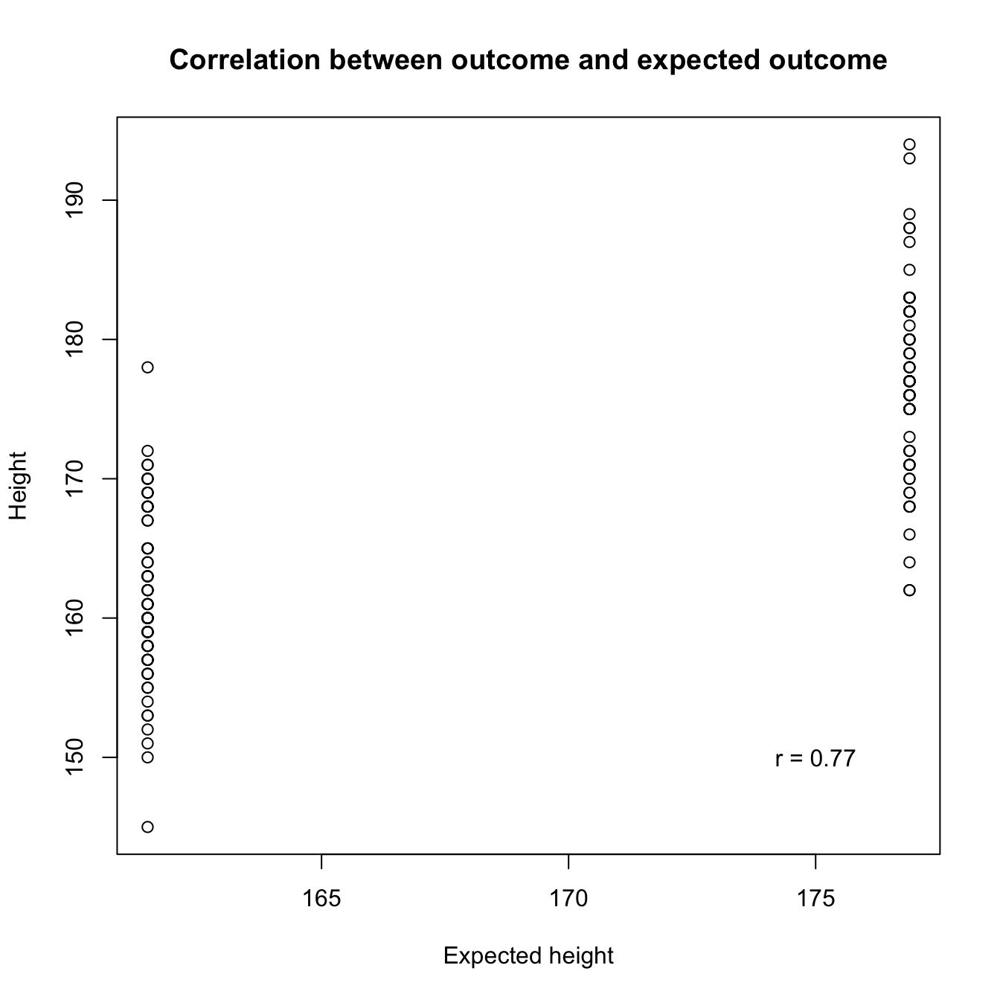
R squared
\(R^2\) is simply the squared correlation \(r = 0.77\), \(R^2 = r \times r = 0.5929\).
This represents the amount of variance explained in relation to the total amount of variance.
Total variance
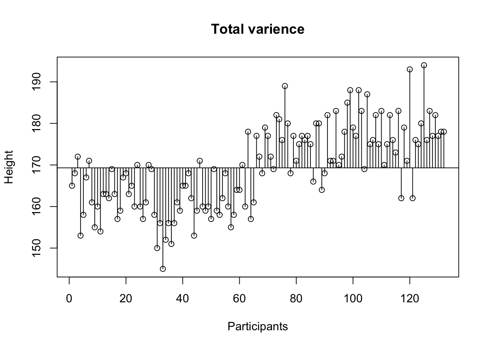
Sums of squares \(\Sigma^n_{i = 1} (x_i - \bar{x})^2\) devided by the degrees of freedom \(n-1\).
\[\text{Variance} = s^{2} = \dfrac{\sum_{i=1}^{n}(x_i - \overline{x})^{2}}{n - 1}\]
Explained variance
Between groups
What part of the variance is explained by the model.
\(R^2 = \frac{{SS}_{explained}}{{SS_{total}}}\)
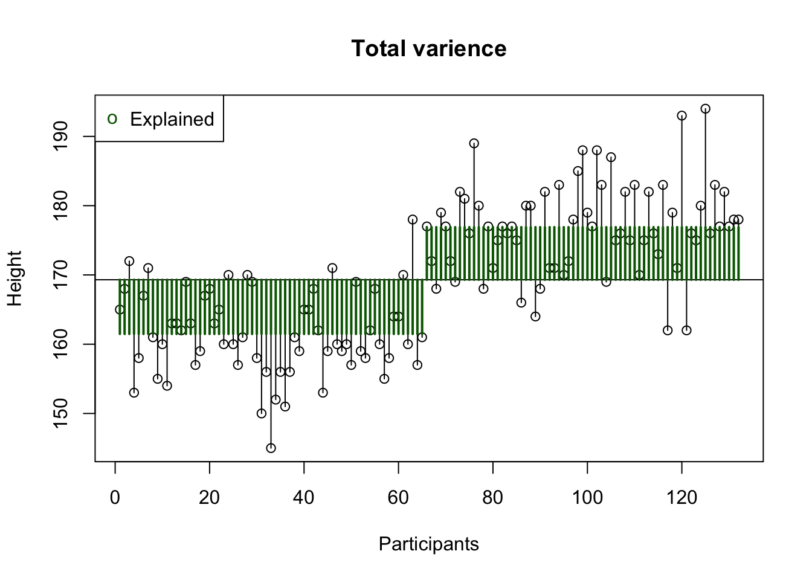
Unexplained variance
Unexplained = within groups variance = error = residuals
This is the error / residual (\(\epsilon\)). The difference between model expectation and observed measurement.
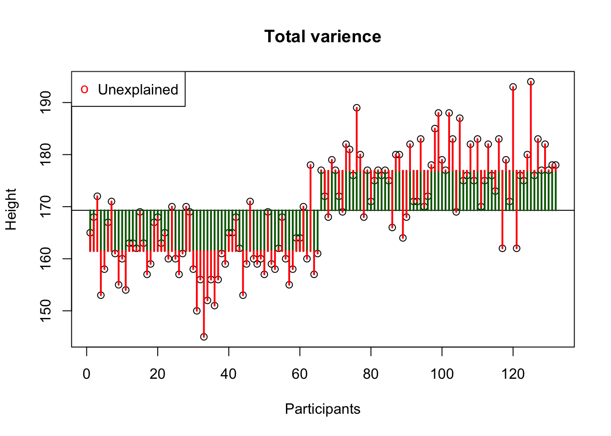
F value
This is the ratio between average explained and unexplained variance.
\(F = \frac{{MS}_{Explained}}{{MS_{Unexplained}}} = \frac{{MS}_{model}}{{MS_{error}}} = \frac{{MS}_{model}}{{MS_{Residuals}}}\)
Analysis of Variance Table
Response: height
Df Sum Sq Mean Sq F value Pr(>F)
sex 1 7843.4 7843.4 190.64 < 2.2e-16 ***
Residuals 130 5348.5 41.1
---
Signif. codes: 0 '***' 0.001 '**' 0.01 '*' 0.05 '.' 0.1 ' ' 1F-distribution
Ronald Fisher
The F-distribution, also known as Snedecor’s F distribution or the Fisher–Snedecor distribution (after Ronald Fisher and George W. Snedecor) is, in probability theory and statistics, a continuous probability distribution. The F-distribution arises frequently as the null distribution of a test statistic, most notably in the analysis of variance; see F-test.
Sir Ronald Aylmer Fisher FRS (17 February 1890 – 29 July 1962), known as R.A. Fisher, was an English statistician, evolutionary biologist, mathematician, geneticist, and eugenicist. Fisher is known as one of the three principal founders of population genetics, creating a mathematical and statistical basis for biology and uniting natural selection with Mendelian genetics.

Population distribution
layout(matrix(c(2:6,1,1,7:8,1,1,9:13), 4, 4))
n = 56 # Sample size
df = n - 1 # Degrees of freedom
mu = 170
sigma = 6.35
height = seq(mu-45, mu+45, 1)
par(mar=c(4,2,0,0))
plot(height, dnorm(height, mean = mu, sd = sigma), type='l', col="red")
n.samples = 12
for(i in 1:n.samples) {
par(mar=c(2,2,0,0))
hist(rnorm(n, mu, sigma), main="", cex.axis=.5, col="red")
}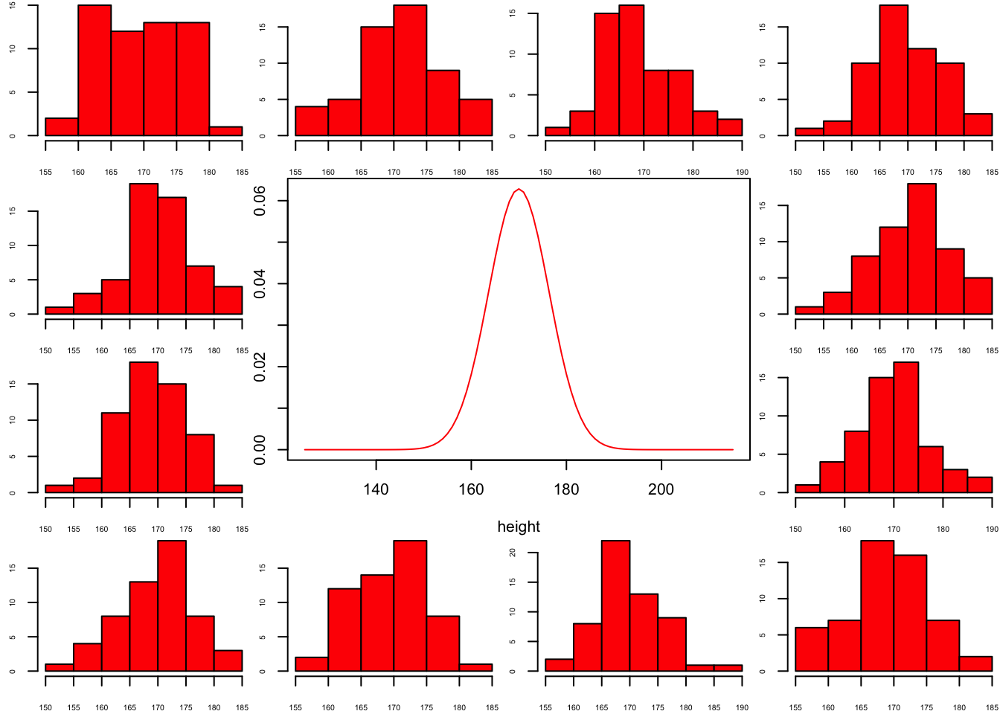
F-statistic
\(F = \frac{{MS}_{model}}{{MS}_{error}} = \frac{\text{between group var.}}{\text{within group var.}} = \frac{Explained}{Unexplained} = \frac{{SIGNAL}}{{NOISE}}\)
The \(F\)-statistic represents a signal to noise ratio by defiding the model variance component by the error variance component.
Sample from same distribution
Let’s take two sample from our normal population and calculate the F-value.
x.1 = rnorm(n, mu, sigma)
x.2 = rnorm(n, mu, sigma)\[F = \frac{{MS}_{model}}{{MS}_{error}} = \frac{{SIGNAL}}{{NOISE}} = \frac{{93.57}}{{53.18}} = 1.76\]
More samples
let’s take more samples and calculate the F-value every time.
n.samples = 1000
f.values = vector()
for(i in 1:n.samples) {
x.1 = rnorm(n, mu, sigma); x.1
x.2 = rnorm(n, mu, sigma); x.2
data <- data.frame(group = rep(c("s1", "s2"), each=n), score = c(x.1,x.2))
f.values[i] = summary(aov(lm(score ~ group, data)))[[1]]$F[1]
}
k = 2
N = 2*n
df.model = k - 1
df.error = N - k
hist(f.values, freq = FALSE, main="F-values", breaks=100)
F = seq(0, 6, .01)
lines(F, df(F,df.model, df.error), col = "red")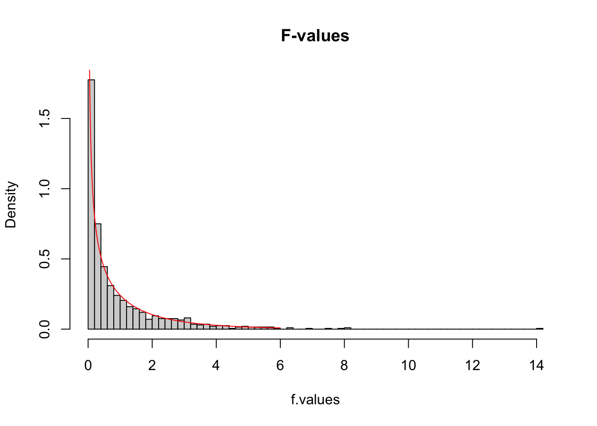
F-distribution
So if the population is normally distributed (assumption of normality) the f-distribution represents the signal to noise ratio given a certain number of samples (\({df}_{model} = k - 1\)) and sample size (\({df}_{error} = N - k\)).
The F-distibution therefore is different for different sample sizes and number of groups.
\[\frac{\sqrt{\frac{(d_1x)^{d_1}\,\,d_2^{d_2}} {(d_1x+d_2)^{d_1+d_2}}}} {x\operatorname{B}\left(\frac{d_1}{2},\frac{d_2}{2}\right)}\]
Warning
Formula not exam material
F-distribution

F-distribution

Moderation
Interaction
In statistics and regression analysis, moderation occurs when the relationship between two variables depends on a third variable. The third variable is referred to as the moderator variable or simply the moderator. The effect of a moderating variable is characterized statistically as an interaction.
Categorical and continuous predictor
Another good predictor for height is the mid-parental height. That is, the biological sex adjusted average height of both parents.
Interaction
Formal model
\[ \begin{align} \widehat{outcome}_i &= b_0 + b_1 \times \text{dummy}_i + b_2 \times {MPH}_i + b_3 \times \text{dummy}_i \times {MPH}_i\\ \widehat{height}_i &= b_0 + b_1 \times \text{male}_i + b_2 \times {MPH}_i + b_3 \times \text{male}_i \times {MPH}_i\\ \end{align} \]
Regression model
\[ \begin{align} \widehat{height}_i &= b_0 + b_1 \times \text{male}_i + b_2 \times {MPH}_i + b_3 \times \text{male}_i \times {MPH}_i\\ \end{align} \]
| height | |||
| Predictors | Estimates | CI | p |
| (Intercept) | 72.36 | 52.13 – 92.60 | <0.001 |
| sex [male] | -3.93 | -32.35 – 24.49 | 0.785 |
| MPH | 0.53 | 0.41 – 0.65 | <0.001 |
| sex [male] × MPH | 0.06 | -0.10 – 0.23 | 0.445 |
| Observations | 132 | ||
| R2 / R2 adjusted | 0.838 / 0.834 | ||
ANOVA
anova(fit2)Analysis of Variance Table
Response: height
Df Sum Sq Mean Sq F value Pr(>F)
sex 1 7843.4 7843.4 469.3746 <2e-16 ***
MPH 1 3199.8 3199.8 191.4850 <2e-16 ***
sex:MPH 1 9.8 9.8 0.5859 0.4454
Residuals 128 2138.9 16.7
---
Signif. codes: 0 '***' 0.001 '**' 0.01 '*' 0.05 '.' 0.1 ' ' 1Total explained variance
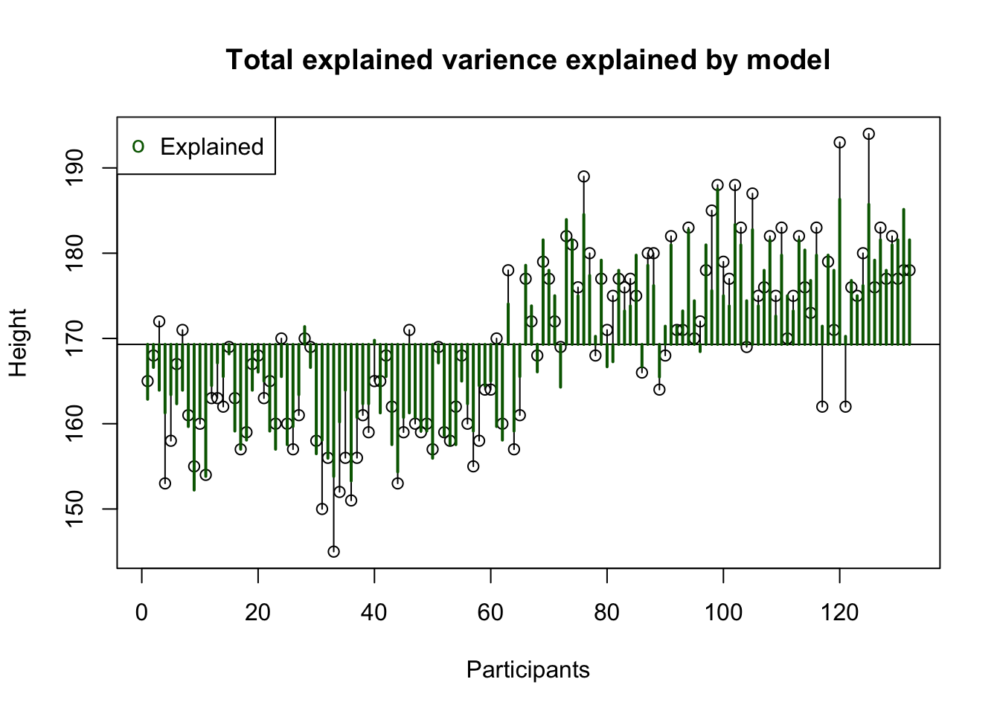
Total unexplained variance
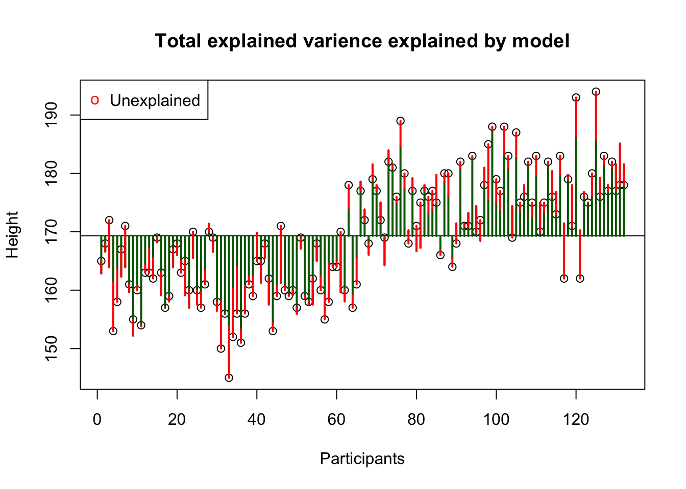
Explained variance sex
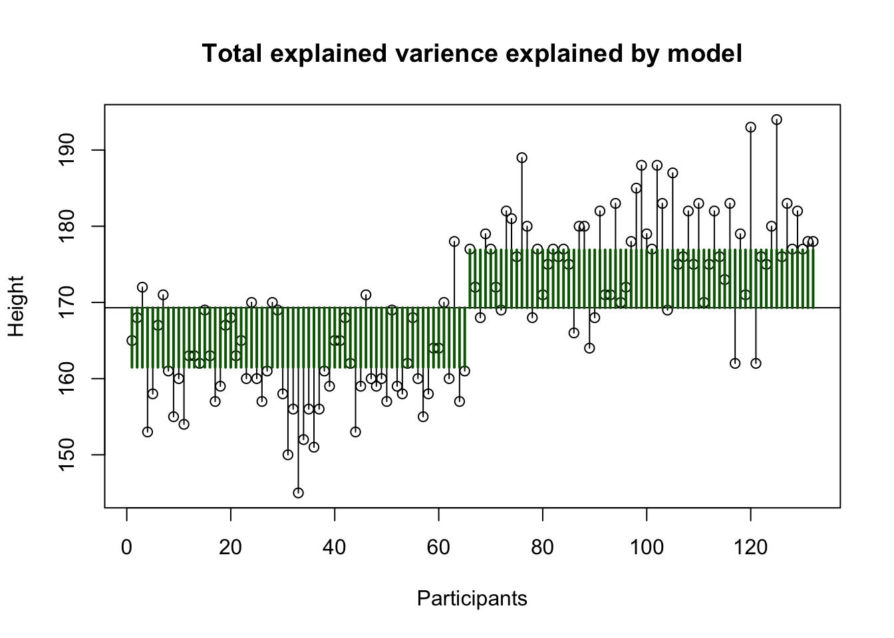
Explained variance MPH
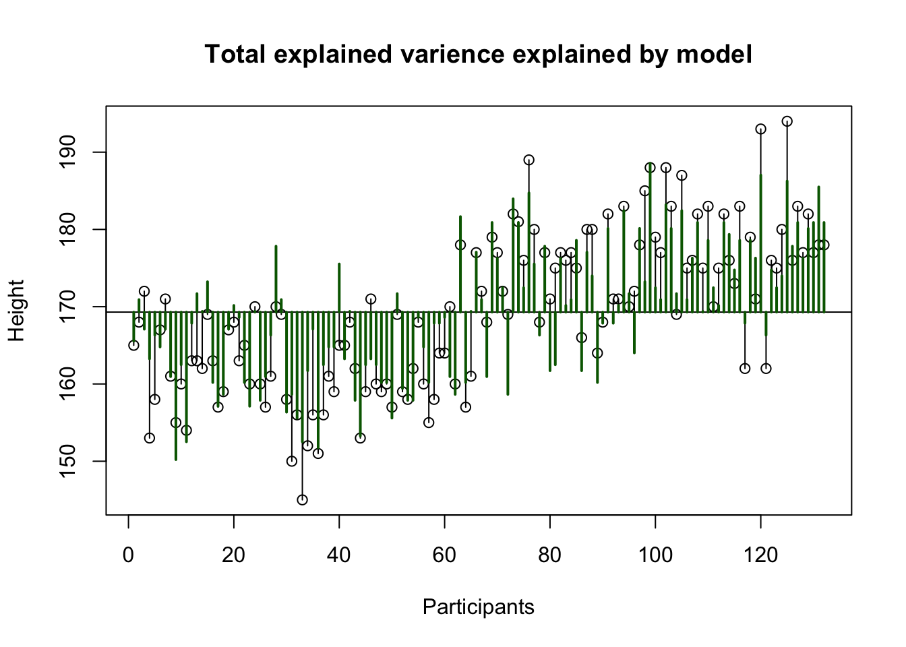
Interaction SS AB Alcohol x Speed
| Variance | Sum of squares | df | Mean squares | F-ratio |
|---|---|---|---|---|
| \(\hspace{2ex}AB\) | \(\text{SS}_{A \times B} = \text{SS}_{\text{model}} - \text{SS}_{\text{A}} - \text{SS}_{\text{B}}\) | \(df_A \times df_B\) | \(\frac{\text{SS}_{\text{AB}}}{\text{df}_{\text{AB}}}\) | \(\frac{\text{MS}_{\text{AB}}}{\text{MS}_{\text{error}}}\) |
\[ \begin{align} {SS}_{{sex} \times {MPH}} &= {SS}_{model} - {SS}_{sex} - {SS}_{MPH} \\ {SS}_{{sex} \times {MPH}} &= 11053 - 7843.4 - 3199.8 = 9.8 \end{align} \]
Interaction plot
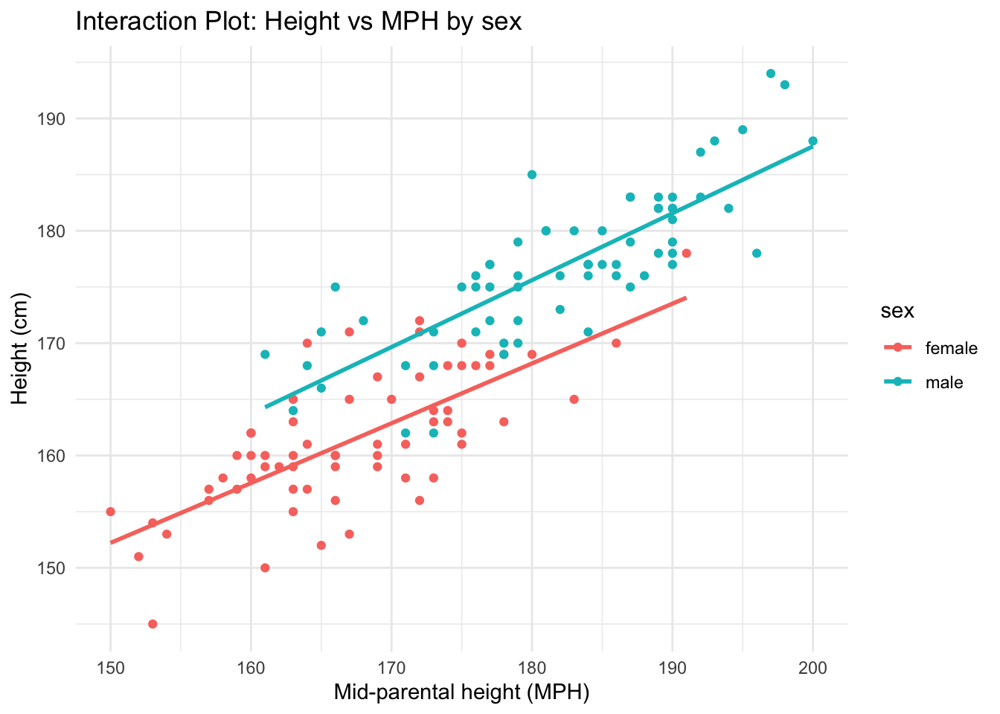
End
Contact